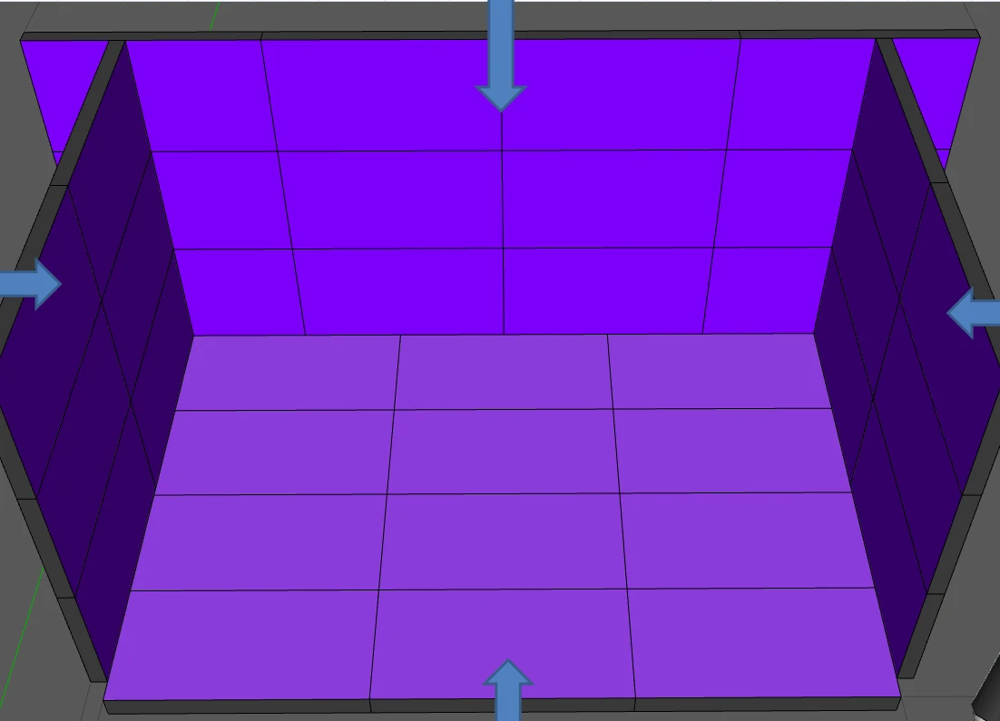

작업 요약
- 제작
- 고정 카메라에서 스튜디오와 하나의 공간으로 보이는 LED 배경을 제작했다.
- 담당
- 스튜디오 초기 구성과 담당 환경 제작, 팀 폴더 규약 및 Maya 작업 시간 기록 스크립트를 맡았다.
- 기술
- Unreal Engine · 면별 렌더링 · Nuke 스티칭 · Maya 스크립트
- 결과
- 면별 영상을 LED용 화면으로 연결하고 작업 시간 기록을 .log 파일과 Google Sheets로 전달하도록 구성했다.
제작 과정
MBC 선거방송에 사용할 LED 환경을 제작했다. 고정 카메라에서 스튜디오가 하나의 가상 공간처럼 보이도록 실제 스튜디오 구조를 Unreal Engine에 옮기고 초기 카메라 위치와 LED 크기를 설정했다.
작업자별로 맡은 환경을 제작하면서 프로젝트 에셋과 머티리얼 폴더, 네이밍, 내부망 파일 정리 규약을 정리해 공유하고 Maya 작업 시간 기록 스크립트도 만들었다.
1. 스튜디오에 맞춘 환경 제작
LED 화면이 정해진 카메라 위치에서 하나의 공간처럼 이어져야 했다. 그래서 촬영 전에 테크비즈로 카메라와 스튜디오 위치를 확인하고 Unreal Engine 안에도 실제 스튜디오와 같은 구조를 만들었다.
이 조건에 맞춰 작업자들이 맡은 환경을 제작했다.


2. 면별 렌더링과 스티칭
완성한 환경을 정면·바닥·좌우 면으로 나눠 렌더링한 뒤 Nuke에서 하나의 영상으로 스티칭해 LED에 적용했다. 실제 스튜디오와 같은 조건에서 현장 카메라 시점이 자연스럽게 이어지도록 맞췄다.


3. 폴더 규약과 작업 시간 스크립트
여러 환경을 함께 제작할 때 파일을 같은 기준으로 관리하도록 Unreal Engine 프로젝트와 내부망 폴더 규약을 팀에서 처음 정리해 문서로 공유했다. 환경별 작업 시간을 기록하려고 Maya 스크립트도 만들었으며 결과는 .log 파일로 출력해 PM이 관리하는 Google Sheets에 올라가도록 연결했다.